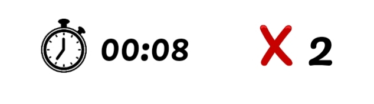
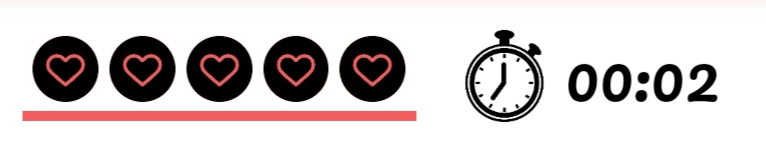

Sobre O Jogo
Fruit Alchemist é um Minigame desenvolvido para a disciplina de FMCC II da Universidade Federal de Campina Grande. O objetivo do jogo consiste em estimular o raciocínio lógico do jogador por meio do uso da Tabela de Cayley (que , por padrão , já é iniciada com 50% preenchida - visando tornar o jogo mais fácil para usuários que não conhecem estruturas algébricas). Para fins lúdicos, os símbolos ou números matemáticos são representados por meio de imagens de frutas e o jogador não precisa ter conhecimentos prévios para conseguir completar a tabela.
Como jogar
O jogador deve visualizar os elementos preenchidos incialmente na tabela e montar uma linha de raciocínio para tentar descobrir a fórmula de combinação das frutas e , assim , completar a tabela. A partir disso , selecione uma fruta da "CAIXA" abaixo da tabela e clique na posição da tabela em que achar que a fruta seria posicionada de forma correta. Ao finalisar um jogo , a tabela é competada altomaticamente - marcando os elementos acertados de verde e os errados de vermelho. Para jogar novamente , recarregue a página ou clique em "Home" .
Dica: Como os grupos são comultativos , os elementos da tabela são simétricos em relação à diagonal principal.
Modos De Jogo
Modo Estático :
O modo estático possui vidas ilimitadas , isto é , o jogador pode preencher a tabela sem se preocupar com os erros . Indicamos esse modo para jogadores iniciantes, já que o raciocínio lógico pode ser aperfeiçoado com os erros e acertos.
Esse modo possui um cronômetro (Que marca o tempo até completar a tabela) e um contador de erros (Que marca quantas vezes o jogador errou).
RECOMENDAÇÂO : A cada rodada , tente reduzir a sua quantidade de erros e seu tempo total de jogo . Se você é iniciante , comece na tabela 4X4 e , quando se sentir confiante , aumente o tamanho da tabela. Após jogar algumas partidas no modo estático, tente jogar no modo dinâmico.
Modo Dinâmico :
O modo dinâmco é bem similar ao estático, mas o jogador possui apenas 5 vidas para completar toda a tabela.
Esse modo também possui um cronômetro (Que marca o tempo até completar a tabela) e um marcador de vidas (Que mostra suas vidas restantes).
RECOMENDAÇÂO : A cada rodada , tente reduzir o seu tempo total de jogo e completar a tabela perdendo o mínimo de vidas. Comece na tabela 4X4 e , quando se sentir confiante , aumente o tamanho da tabela.
Dificuldade
A Dificuldade , em ambos os modos , é marcada pelo tamanho da tabela - que pode ter de 16 até 64 elementos. Veja os exemplos de tabelas abaixo:
LEMBRE-SE : Esse é um minigame educativo que desafia o jogador a usar o raciocínio lógico . Não complete a tabela chutando a posição das frutas , mas sim , pense antes de jogar.